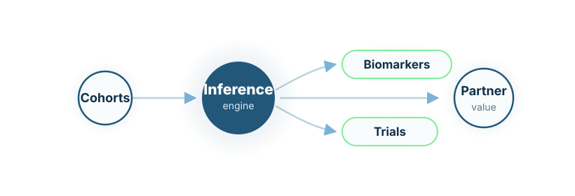

Genomic-clinical AI
AI-assisted interpretation of genomic, phenotypic, clinical, and longitudinal data.
Research-grade analytics
Genomic AI for underrepresented populations, pharma research, and precision medicine.
LydiaRX develops genomic AI venture vehicles built around responsibly governed genomic, clinical, and longitudinal data.
LydiaRX develops genomic-clinical AI platforms that connect genomic data with phenotype, treatment history, outcomes, clinical metadata, biomedical literature, and longitudinal follow-up.
The initial strategic programme is connected to Pakistan through collaboration with Precision Omics. The broader objective is to create scalable genomic-clinical AI platforms for pharma research, pharmacogenomics, biomarker discovery, trial feasibility, real-world evidence, and disease-area venture vehicles.

AI-assisted interpretation of genomic, phenotypic, clinical, and longitudinal data.
Population-specific drug-response research and later validated clinical modules.
Prioritisation of biomarkers for disease-area research and partner evidence generation.
Cohort search, patient stratification, and trial-design support for pharma teams.
Controlled environments for analysis, reporting, and structured partner collaboration.
Focused platforms for oncology, cardiometabolic disease, rare disease, infectious disease, and other selected areas.
LydiaRX’s genomic AI strategy begins with cohort analysis, variant prioritisation, biomarker exploration, pharmacogenomic research, pharma collaboration, and structured evidence packages. Clinical modules can be developed later where validation, regulatory evidence, and governance support such expansion.
LydiaRX works with partners interested in genomic-clinical AI, pharmacogenomics, disease-area analytics, and secure pharma-facing research workspaces.
Discuss Genomic AI Collaboration